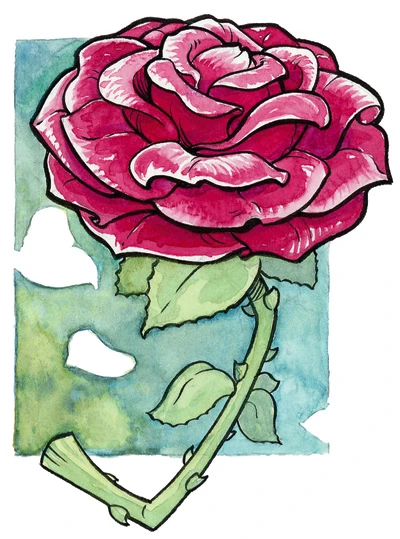
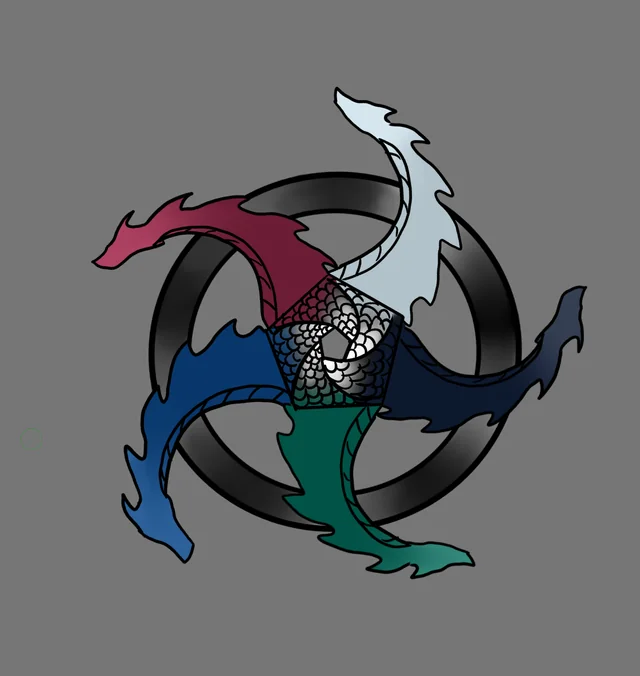

Gods of Krynn
The gods of Krynn are said to have abandoned the world,
and in the great cities of Ansalon, temples and centers of
faith are few. Nevertheless, small miracles occur across the
world. Druids and hidden communities offer prayers in the
old ways and employ mysterious magic. Long-lived peoples
remember the worship of the gods and see their shapes in
nature and the constellations above. Ancient, forgotten
sanctuaries hold wonders beyond imagination, and divine
whispers reach those with the minds and hearts to listen.
The gods haven’t wholly abandoned Krynn, and as threats grow,
mortals turn to them once more—sometimes after a remarkable
encounter with a messenger of the gods.
Gods of Good
The gods of good provide healing and comfort to the mortals of Krynn. Although
they oppose the evil gods’ attempts to rule the world, their goal isn’t the
eradication of evil or its gods. Rather, their highest pursuit is preserving
mortal choice, despite the sorrowful knowledge that mortals sometimes choose
ruinous paths.
Paladine
Paladine is known as the Father of Good, the Master of Law, the Platinum Dragon,
and—on other worlds of the multiverse—Bahamut. He leads the gods of good and
watches over the world with an eye toward order, justice, and mercy. He teaches
that wise and just laws are the basis of a functioning society, and his clerics
often aid in crafting and upholding such laws. Paladine sometimes appears on
Krynn in the guise of Fizban, a befuddled old human mage in faded robes.
Branchala
Called the Bard King, Branchala is the god of music, poetry, and the inner beauty
of all living things. Many elves and kender worship him above all other gods. Both
groups revere him as a champion of life and laughter, bringing solace and joy to
those who listen.
Habbakuk
Habbakuk, known as the Fisher King, oversees animal life, the sea, and the balance
of nature. Many sailors, farmers, and hunters revere him. His holy sites are often
marked with the image of a blue bird or a phoenix wreathed in blue flames.
Kiri-Jolith
Kiri-Jolith is the god of righteous war. He blesses all who fight in the name of good
and scorns those who delight in slaughter and lust for battle. He is particularly
revered by the Knights of the Sword, an order of the Knights of Solamnia that seeks
to root out evil wherever it dwells.
Majere

Austere and aloof, Majere is the god of meditation and discipline. Monks,
his most devoted followers, honor him by leading lives of quiet contemplation
in remote monasteries. Many orphans are raised in the monasteries of Majere;
some become monks themselves, while those who leave the monastic life often
take the surname Majere out of respect.
Mishakal
God of compassion, healing, and love, Mishakal is widely worshiped by healers
and community guardians. Throughout history, she has reached out to chosen
heroes to soothe others’ suffering. Her faithful offer healing and solace to all—even enemies.
Solinari
Solinari, the god of good magic, is patron of the Mages of High Sorcery’s Order
of the White Robes and other benevolent mages. His power manifests through the
white moon of Krynn, the brightest of its three moons. Along with his cousins
Lunitari and Nuitari, he watches Krynn from the heavens and encourages magic that
aids, heals, and protects.
Gods of Neutrality
The neutral gods of Krynn vary widely in their motivations and methods. Some are passive and distant,
dedicated to recording the actions of mortals or upholding the balance between societies and nature.
Others take a more active hand, injecting elements of chaos and innovation into mortal life. Unlike the
gods of good and evil, the neutral gods have little interest in the struggle over mortal destinies.
Gilean
The god of knowledge and nominal leader of the neutral gods, Gilean embodies
the ideal of neutrality. He stands back and observes, recording all that unfolds.
Gilean is keeper of the Tobril, a book said to contain all the knowledge of the
gods, though portions are sealed to all but Gilean. Some people believe the scribe
Astinus of Palanthas to be Gilean in human form.
Chislev
Chislev is the god of nature on its own terms, governing the rhythms of life that unfold heedless of
mortal action. Though enigmatic and shy, they are fiercely protective of their domain, regarding all
plants and animals as their children. Chislev’s followers are often hermits, druids, and others who
revere nature without asking anything in return.
Lunitari
Lunitari, the god of neutral magic and illusions, is patron of the Mages of High Sorcery’s Order of the
Red Robes and other neutral mages. With her cousins Solinari and Nuitari, she watches over the people of
Krynn from the heavens, conveying her power through the red moon that shares her name. She appears as a
trickster figure in mythology, using her mastery of illusions to fool gods and heroes alike.
Reorx
Reorx, the god of craft, is revered by dwarves, gnomes, and kender. He is the patron of smiths,
inventors, and artisans, and his followers believe that the act of creation is a form of worship.
Reorx is known for his quick temper and his love of a good joke, and he is said to have created
the world from the body of a slain dragon.
Shinare
Shinare is the god of wealth, industry, and commerce. Though many of her followers are merchants,
her influence spans legitimate and underhanded commerce alike, and she receives occasional worship
from thieves. Despite this, most consider her a god of fair dealing; supplicants pray she favors
them as they bargain.
Sirrion
Passionate and impulsive, Sirrion is the god of alchemy, transformation, serendipitous creation,
and flames. He embodies momentary excitement, flaring quickly into fiery passion and smoldering
long afterward. Sirrion’s followers embrace extremes of emotion as forms of divine expression.
Zivilyn
Where Gilean embodies knowledge, Zivilyn exemplifies the calm wisdom necessary to wield knowledge
in the world. He’s said to exist in all times and places, possessing the collected wisdom of every
plane of existence. Zivilyn often attracts the worship of eccentrics, philosophers, and sages.
Gods of Evil
The evil gods of Krynn embody power, vengeance, and other ideals that elevate self above community.
They wish to rule the mortal world, believing only they are worthy of such dominion. They rely on
temptation and subjugation to secure the service of lesser creatures. In every age, some mortals are
willing to sell their souls for power, and the gods of evil are eager to oblige.
Takhisis

Takhisis, leader of Krynn’s evil gods, is known as the Dragon Queen, the Queen of Darkness, or other such titles.
She is the god of power, pride, and control, as well as the queen of chromatic dragons. She tempts mortals to her
service with offers of dominance over others. Takhisis is the most feared of the gods of Krynn, and her followers
sevrve with fanatic devotion. Unquestioning loyalty is rewarded with power and influence, while failure is met with
swift and terrible punishment.
Chemosh
Chemosh is the god of undeath and false redemption, tempting his followers with the promise of immortality.
Those who heed him find that while they may live forever, their bodies still decay and putrefy. Followers of
Chemosh embrace his baleful reputation, dressing in white skull masks and black robes.
Hiddukel
Hiddukel is the god of greed and treachery. He holds domain over all ill-gotten wealth in the world, and criminals
and unscrupulous traders worship him in secret (even if it is in jest and mockery). While Hiddukel gladly accepts their worship, his true goal is the
acquisition not of riches, but of souls.
Morgion
Solitary and secretive, Morgion is the god of disease and decay. He doesn’t consult or act in accord with the other
gods, preferring to brood in his otherworldly fortress, the Bronze Tower, and pursue his own schemes. His worshipers
follow his example, meeting in the dark and maintaining secrecy in all things.
Nuitari
Nuitari, the god of evil magic and darkness, is patron of the Mages of High Sorcery’s Order of the Black Robes and
other wicked mages. He encourages selfish and destructive magic. His power flows through the black moon that shares
his name, which is visible only due to the stars it blocks in the sky.
Sargonnas
Sargonnas is the unpredictable god of flame, vengeance, and wrath. Though he’s a consort to Takhisis, he schemes against
her as often as he fights on her behalf. He is worshiped by those who seek retribution. His true form is that of a monstrous
minotaur, and many minotaurs revere him under the name Sargas.
Zeboim
Zeboim is the god of the ocean in its destructive aspect, including storms and dangerous sea creatures. She is a mercurial god,
and even her followers aren’t safe from her frequent bouts of rage. Most sailors pray to Habbakuk to keep Zeboim at bay, but
some make offerings to Zeboim to allay her wrath.